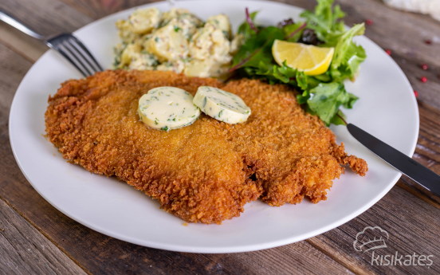

Avusturya mutfagina ait olan snitzel genellikle yagda kizartilarak pisirilir
Avrupa kokenli bir fast food urunudur genellikle nuggete benzer
- 200 gr tavuk
- 1 adet yumurta
- 8 gr tuz
- 20 gr tereyag
- tavuklar bonfile boylamasind aortadan ikiye kesilip iki parca halinde acilir
- buzdolabi poseti veya strec film icerisinde et dovecegi yardimi ile inceltilir
- yumurta bir kap icersinde kirilip tuz ve karabiber eklenerek cirpilir